14
Days on ground
Warsaw ✈ Hong Kong · Shenzhen · Shanghai · Shaolin · Beijing ✈ Warsaw
South-to-north by high-speed rail and one internal flight — no backtracking, a single mainland entry.
Fourteen full days moving south-to-north — land in Hong Kong, fly home from Beijing, and hit Shaolin and the Great Wall in between. The long-haul flights sit outside the 14 days.
| Warsaw → Hong Kong | Flight · 1 stop | ~15–17 h |
| Hong Kong → Shenzhen | High-speed rail | ~15–20 min |
| Shenzhen → Shanghai | Flight | ~2.5 h |
| Shanghai → Zhengzhou | High-speed rail | ~4 h |
| Zhengzhou → Beijing | High-speed rail | ~2.5 h |
| Beijing → Warsaw | Air China nonstop | ~9–10 h |
Fly into
Hong Kong (HKG)
Fly home from
Beijing (PEK)
Ticket
One open-jaw multi-city booking
Best value
Mar–mid-Jun · Sep–Nov
Out from Warsaw to the South China coast, north through the mainland to Beijing, and a direct hop home — roughly 9,000 km each way, with no backtracking in between.
Land in the evening — Airport Express into town, check in, and an easy first meal at a cha chaan teng. Connections run via Doha, Abu Dhabi, Istanbul, Frankfurt, Zurich or Helsinki.
Open-jaw fare (Warsaw–HK / Beijing–Warsaw + 1 internal) — from zł 8,600 for three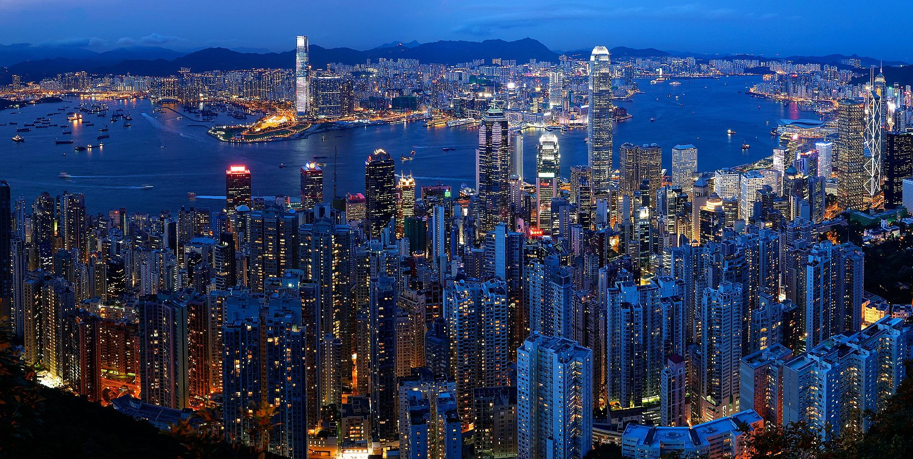
Neon harbour, tram-steep hills, and dim sum before the mainland. Three days on the island and in Kowloon before the border train.
Peak Tram up Victoria Peak, down into Central, the Star Ferry across the harbour at dusk — then stay for the 8pm Symphony of Lights.
Cable car to the Tian Tan Big Buddha at Ngong Ping; evening haggling at the Temple Street Night Market in Kowloon.
Tsim Sha Tsui waterfront, the Apple Store at IFC, and Sham Shui Po's electronics stalls — a warm-up for Shenzhen. Sleep near West Kowloon for the train.
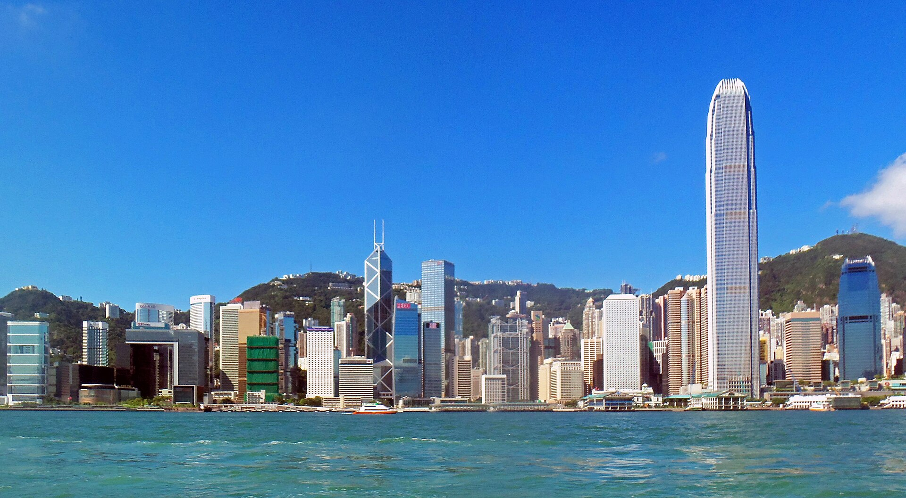
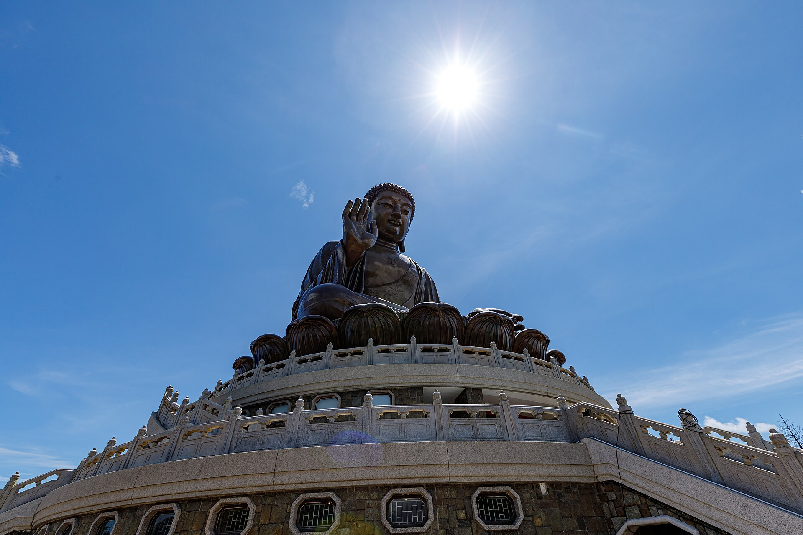
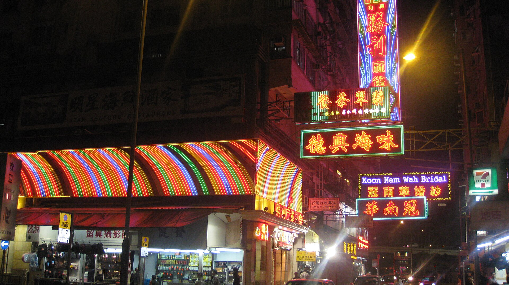
Immigration is handled at the station — this is your single mainland-China entry, so the 30-day visa-free window starts today.
3 rail legs total — from zł 1,400 for three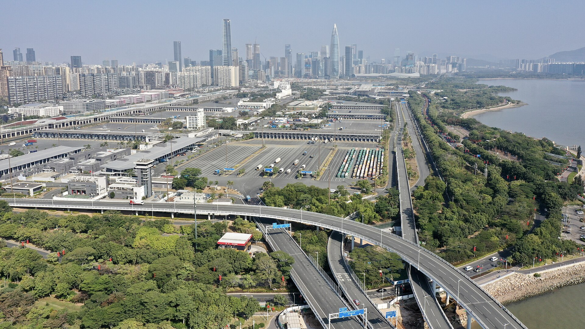
Robotaxis on the street, the world's biggest electronics market, and skyline views over Shenzhen Bay — China's Silicon Valley, up close.
Morning bullet train from West Kowloon (~15 min). Ease in with a driverless robotaxi ride and a stroll along Shenzhen Bay.
OCT Harbour on Shenzhen Bay — waterfront promenades, an observation deck, and the buzz of the tech district. Sunset over the skyline from Lianhua Mountain Park.
The world's largest electronics market — SEG Plaza for components, Huaqiang Electronic World for gadgets and audio, Yuanwang for phones. Real sourcing ground, plus the Huawei and Xiaomi flagship stores.
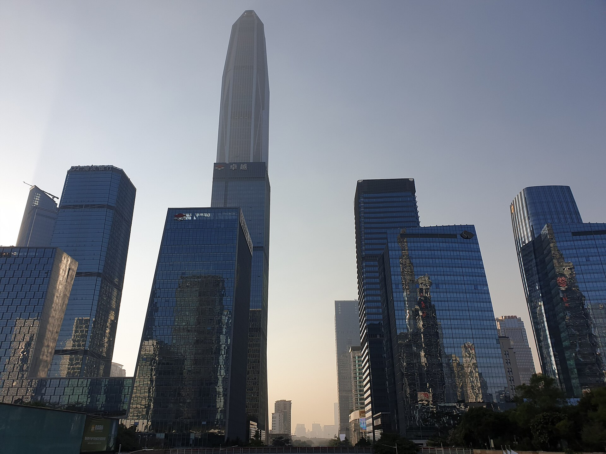
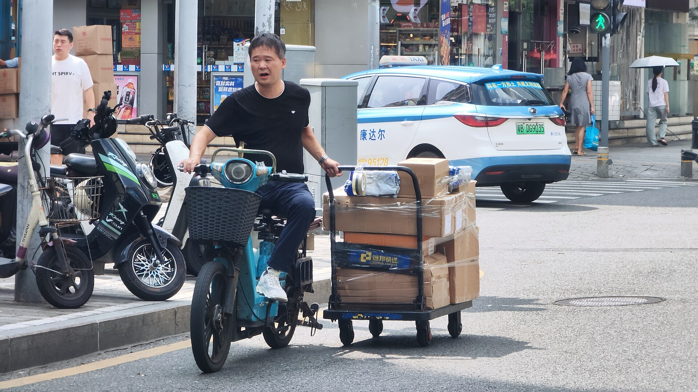
A morning hop north, and the evening is yours on the Bund — the colonial waterfront facing the Pudong skyline.
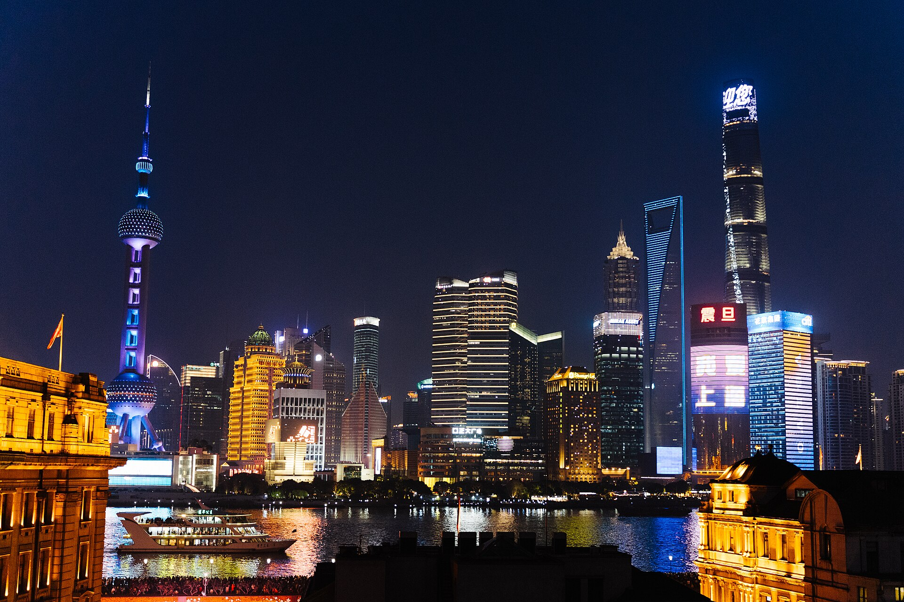
Art-deco river frontage on one bank, a wall of neon towers on the other — with the fastest lifts and a 430 km/h Maglev in between.
Land from Shenzhen, then take the evening on the Bund — the whole Pudong skyline lit up across the water.
Up the Shanghai Tower (world's fastest elevators), through Yu Garden and the old town, along Nanjing Road — then ride the Maglev at 430 km/h for the pure tech thrill.
Tree-lined streets, cafés and the Power Station of Art. Grab a shared bike and reset before the train north.
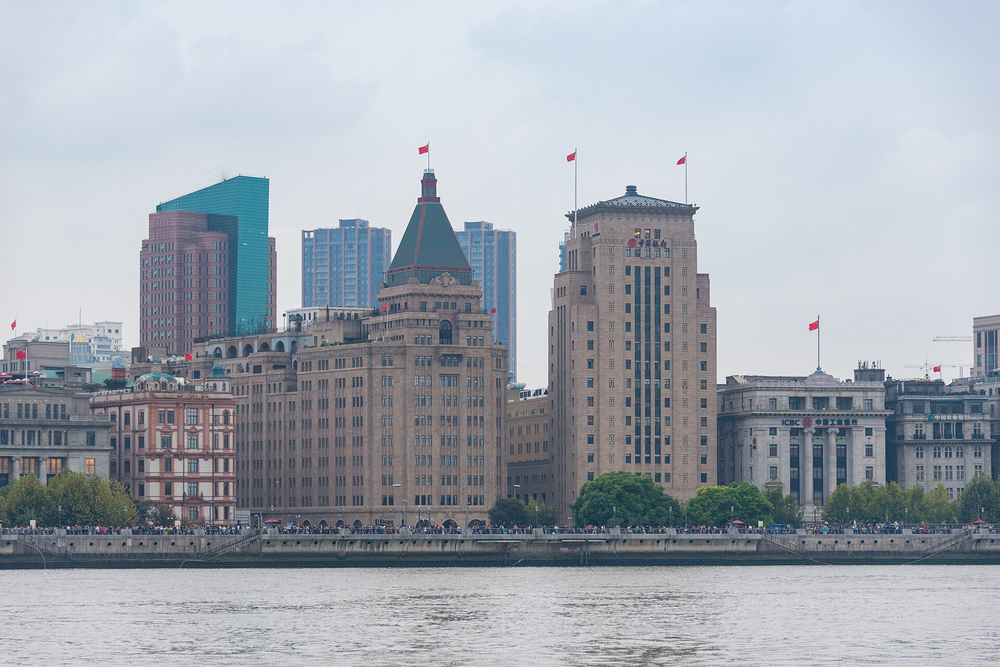
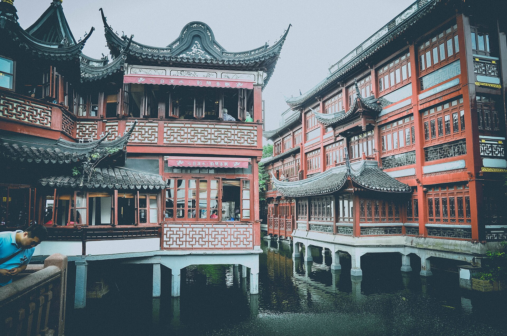
High-speed rail into Henan. Check in at Zhengzhou; the Henan Museum fills the afternoon if you have the energy.
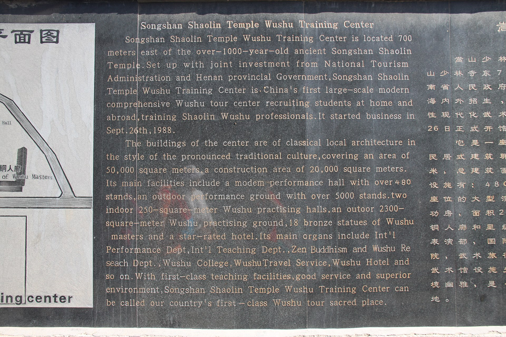
The birthplace of kung fu, carved into a mountainside — a temple, a forest of pagodas, and cliffside plank walks on Mount Song.
High-speed rail from Shanghai (~4 h). Settle in, with the Henan Museum in the afternoon.
Private car ~1.5 h to Dengfeng. Catch the 9:30 or 10:30 kung fu show at the Martial Arts Hall, walk the Pagoda Forest (240+ pagodas, the largest in China), then ride the Mount Song cable car to the cliffside plank walks. Book ahead and avoid weekends.
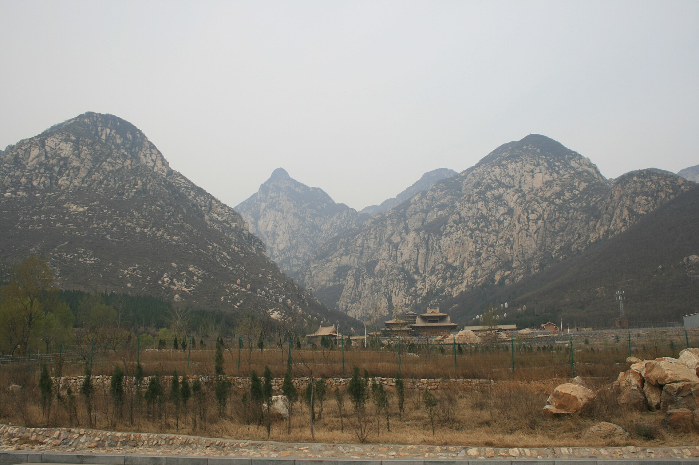
A quick morning run north and you're in the imperial capital by lunch — straight to Tiananmen and the Forbidden City.
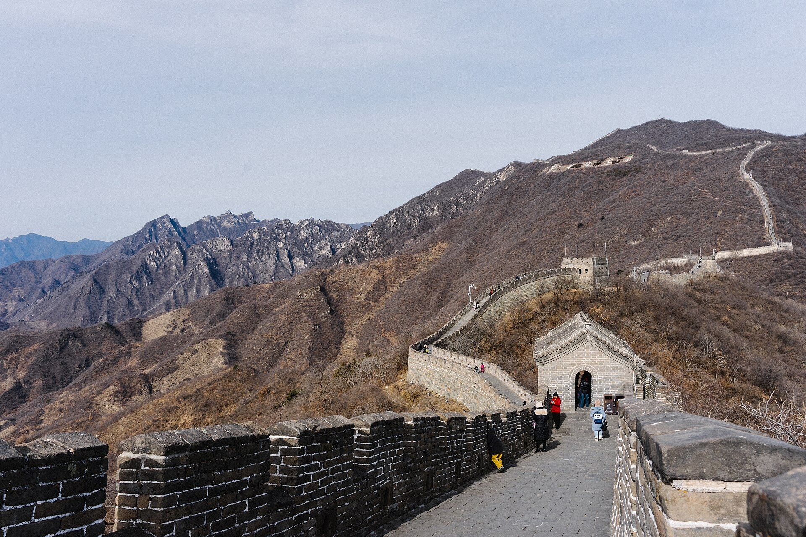
Palaces, the Great Wall, and a Bauhaus factory turned art district — the grand close before the flight home.
Afternoon at Tiananmen Square and the Forbidden City (book entry ahead — it's mandatory and sells out), then climb Jingshan Park for the view over the whole palace.
Day trip to Mutianyu (~1.5 h) — best-preserved and far less crowded than Badaling. Cable car up (¥100), walk to the quieter towers, then toboggan 1.6 km back down through the forest. Passports required at the gate; book ~15 days ahead. Right now it also opens after dark — the summer night tour (25 Jun–31 Aug 2026) lights towers 10–15 from 19:30, with unlimited cable-car rides.
Morning tai chi at the Temple of Heaven, afternoon at the 798 Art Zone — a Bauhaus factory complex turned contemporary-art district. Summer Palace if you still have energy.
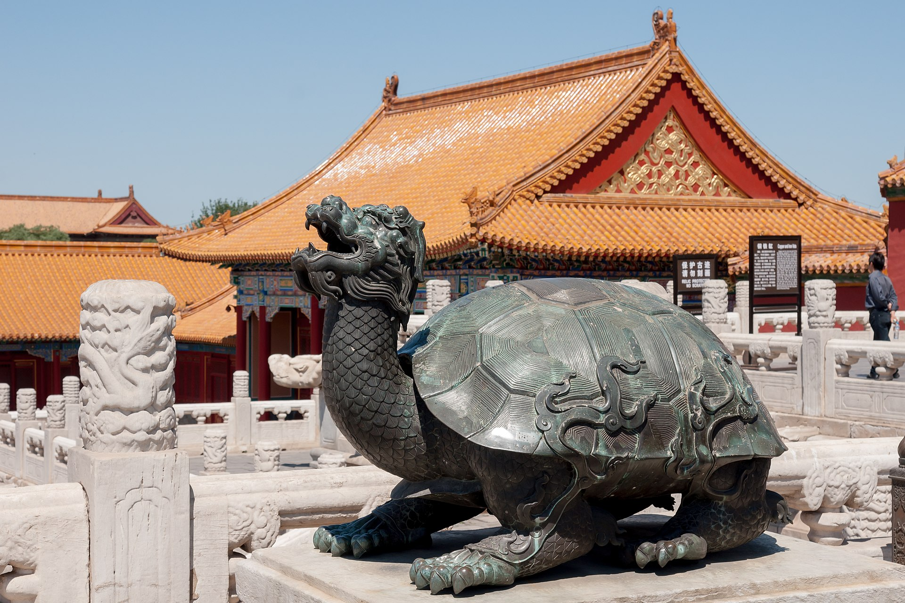
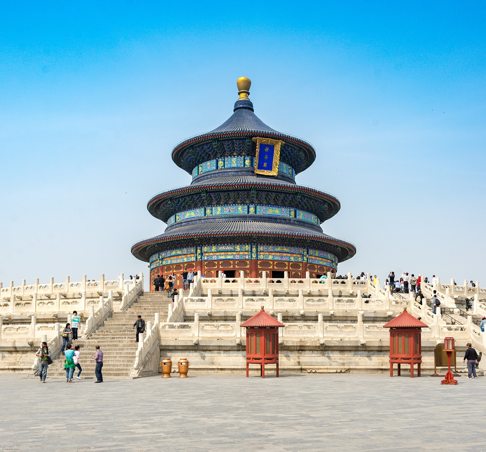
Air China flies you home nonstop (~9–10 h, bookable on a LOT codeshare) — back where you started. LOT dropped its own Warsaw–Beijing route in 2024, so this is the practical direct option; the return leg is already in the open-jaw fare.
All figures in Polish złoty (≈3.75 zł/$, ≈0.55 zł/¥ — checked 5 Jul 2026, drifts daily), for three travellers over the 14 days on the ground. Pick a comfort tier — the numbers update live.
One multi-city ticket, not a round-trip: Warsaw→Hong Kong out, Beijing→Warsaw home, plus the internal Shenzhen→Shanghai hop. Your single biggest line item.
≈ zł 30,000 for three (≈ zł 10,000 each): 3-star hotels, a mix of street food and restaurants, the odd Didi, and private cars for the two day trips.
What moves the number: hotels (Hong Kong is the outlier at ~zł 525–770/night vs ~zł 150–340 on the mainland), your dates (peak summer adds 50–100%), and shopping (anything you pick up in Huaqiangbei is on top). The visa is free — you have visa-free entry.
Per person, in yuan — small change against the totals above, but book the Forbidden City (7 days ahead, 20:00 Beijing) and the Great Wall (~15 days ahead) online with passports, or they sell out. HSR fares run ~¥400–540 (Shanghai→Zhengzhou) and ~¥280–390 (Zhengzhou→Beijing) in 2nd class.
The handful of things that make the difference between a smooth trip and a stressful one.
Polish citizens get 30-day visa-free entry to mainland China (through 31 Dec 2026). The trip uses one entry (HK→Shenzhen) and one exit (Beijing), so the single-entry rule is no problem. Carry passports valid 6+ months with 2 blank pages. Hong Kong is separate immigration — visa-free for 90 days. (31 Dec 2026 is the latest extension of the scheme; re-check before any 2027 trip.)
Install Alipay and WeChat Pay and link a Visa/Mastercard before you go. China is near-cashless — you'll pay by QR everywhere, from the metro to street food. Hotels also register your address within 24 h automatically.
Google, Instagram, WhatsApp and YouTube are blocked on the mainland. A travel eSIM routed through Hong Kong (~zł 45–150 for two weeks) slips past the Great Firewall — those apps just work, no separate VPN. Hong Kong itself has no blocks.
Metro is cheap and everywhere; shared bikes (Meituan, Hellobike) unlock via Alipay for a few grosze a ride. Use Didi — China's Uber — for cars to skip the language barrier. Maps: Apple Maps is okay, Amap or Baidu are best; Google Maps is unreliable.
English is thin outside hotels. Put an offline translator on the phone (Apple Translate, or Baidu / iFlytek) and Pleco for Chinese characters — menus, signs and taxi directions get far easier, and point-and-translate through the camera works wonders.
220V, sockets type A/C/I — one universal adapter covers your Apple and Anker gear. Max 2 power banks per person, carry-on only. Best-value months are March–mid-June or September–November; peak summer adds 50–100% on hotels.